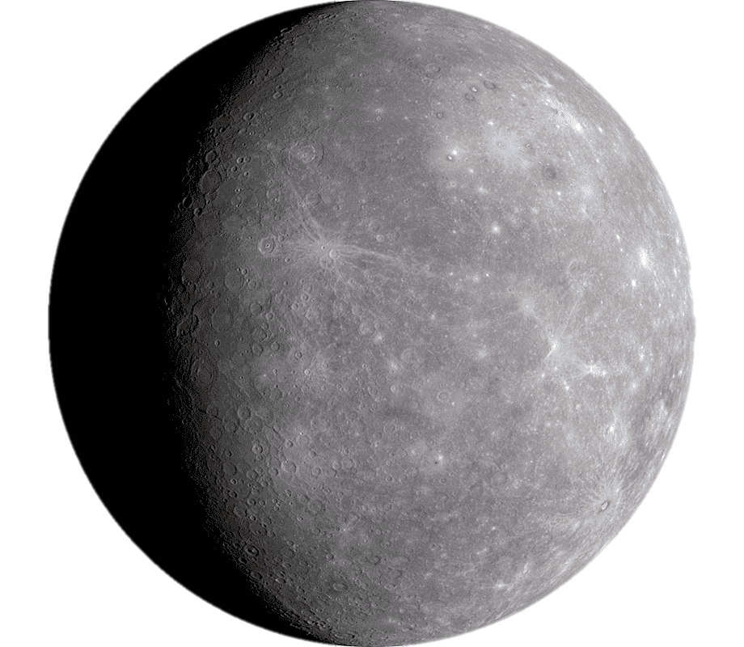
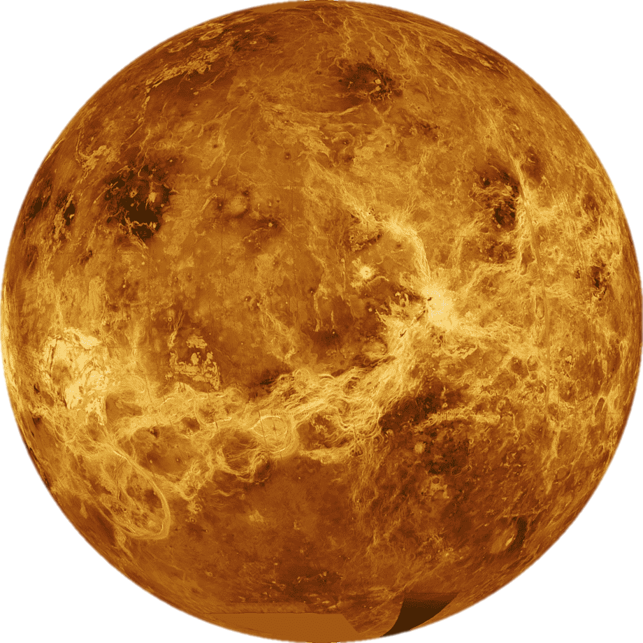
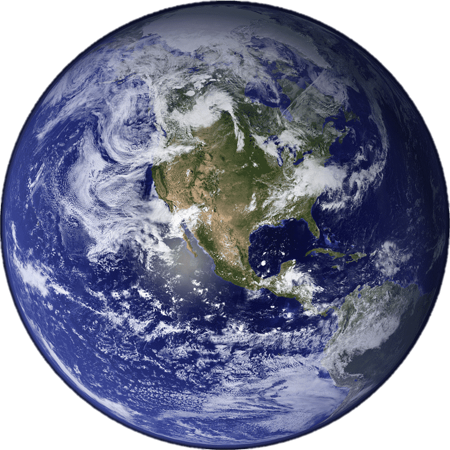
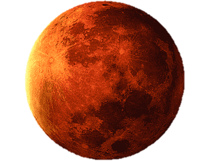
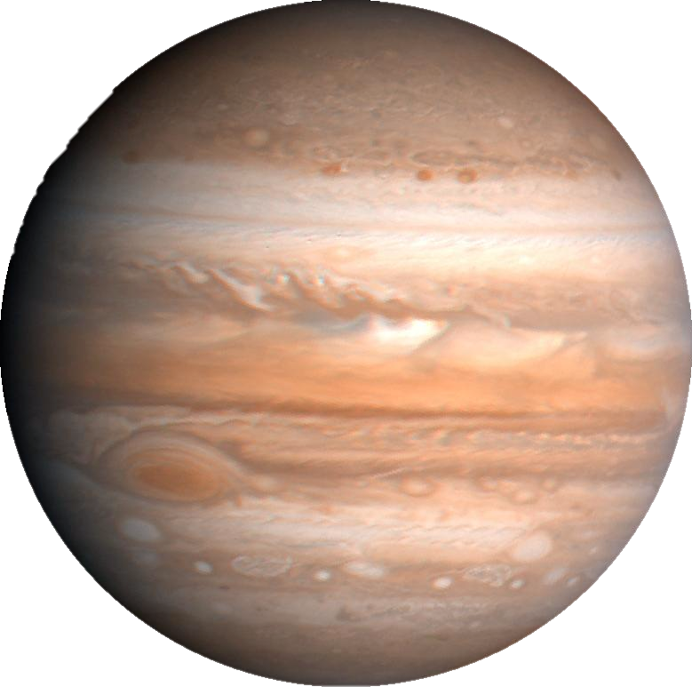
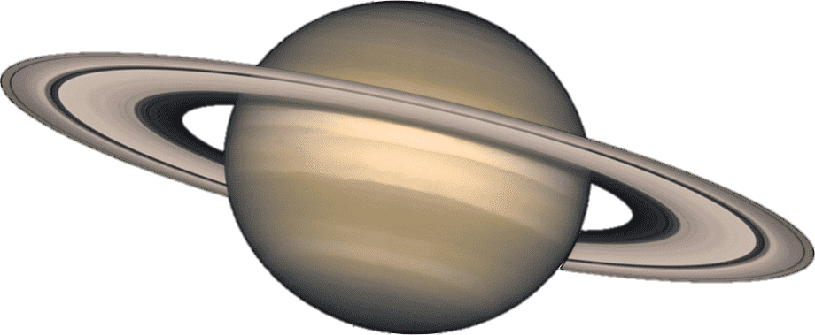
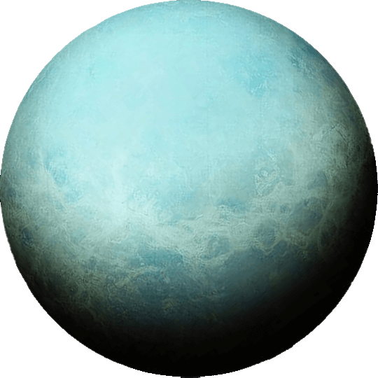
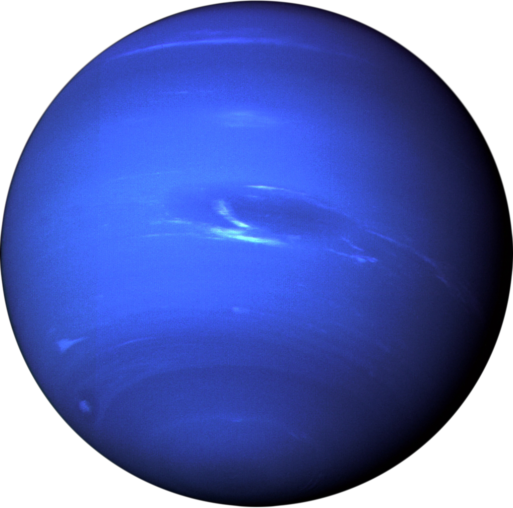

Planet atau sayarah adalah benda astronomi yang mengorbit sebuah bintang atau sisa bintang yang cukup besar untuk memiliki gravitasi sendiri, tidak terlalu besar untuk menciptakan fusi termonuklir, dan telah "membersihkan" daerah sekitar orbitnya yang dipenuhi planetesimal.
Secara umum, planet terbagi menjadi dua jenis utama: raksasa gas besar berkepadatan rendah dan raksasa darat kecil berbatu. Sesuai definisi IAU, ada delapan planet di Tata Surya. Menurut jaraknya dari Matahari (dekat ke jauh), ada empat planet kebumian yaitu, Merkurius, Venus, Bumi, dan Mars, kemudian empat raksasa gas yaitu, Jupiter, Saturnus, Uranus, dan Neptunus. Enam planet di antaranya dikelilingi oleh satu satelit alam atau lebih. Selain itu, IAU mengakui lima planet kerdil dan ratusan ribu benda kecil Tata Surya. Mereka juga masih mempertimbangkan benda-benda lain untuk digolongkan sebagai planet.
Berikut ini adalah macam-macam planet :
- Merkurius

Planet terkecil di Tata Surya sekaligus yang terdekat dari Matahari. Periode revolusi planet ini merupakan yang terpendek dari semua planet di Tata Surya, yakni 87,79 hari. Seperti halnya Venus, Merkurius merupakan planet inferior yang letak orbitnya berada di sebelah dalam orbit Bumi, dan ketika diamati dari Bumi, jarak sudutnya dari Matahari tidak pernah melebihi 28°. Karena jarak yang dekat dengan Matahari, planet ini hanya dapat dilihat di dekat ufuk barat setelah matahari terbenam atau ufuk timur sebelum matahari terbit, atau biasanya ketika aram. Merkurius akan tampak seperti bintang yang terang jika diamati pada waktu tersebut, tetapi sering kali jauh lebih sulit untuk diamati daripada Venus. Jika diamati dari teleskop, Merkurius akan menampilkan serangkaian fase yang mirip dengan fase Venus dan Bulan, ketika bergerak di orbit bagian dalamnya yang relatif terhadap Bumi dan terjadi berulang dalam satu siklus sinodiknya, yakni sekitar 116 hari.
- Venus

Planet terdekat kedua dari Matahari setelah Merkurius. Planet ini mengorbit Matahari selama 224,7 hari Bumi. Venus tidak memiliki satelit alami dan dinamai dari dewi cinta dan kecantikan dalam mitologi Romawi. Setelah Bulan, planet ini merupakan objek alami tercerah di langit malam, dengan magnitudo tampak sebesar −4,6 yang cukup cerah untuk menghasilkan bayangan. Venus merupakan planet inferior dengan sudut elongasi yang mencapai 47,8°. Kecerahan maksimal planet ini dapat dilihat segera sebelum matahari terbit atau setelah matahari terbenam, sehingga disebut Bintang Fajar atau Bintang Senja.
- Bumi

Planet terdekat ketiga dari Matahari yang merupakan planet terpadat dan terbesar kelima dari delapan planet dalam Tata Surya. Bumi juga merupakan planet terbesar dari empat planet kebumian di Tata Surya. Bumi terkadang disebut dengan dunia atau "Planet Biru". Bumi terbentuk sekitar 4,54 miliar tahun yang lalu, dan kehidupan sudah muncul di permukaannya paling tidak sekitar 3,5 miliar tahun yang lalu. Biosfer Bumi kemudian secara perlahan mengubah atmosfer dan kondisi fisik dasar lainnya, yang memungkinkan terjadinya perkembangbiakan organisme serta pembentukan lapisan ozon, yang bersama medan magnet Bumi menghalangi radiasi surya berbahaya dan mengizinkan makhluk hidup mikroskopis untuk berkembang biak dengan aman di daratan. Sifat fisik, sejarah geologi, dan orbit Bumi memungkinkan kehidupan untuk bisa terus bertahan.
- Mars

Planet terdekat keempat dari Matahari. Namanya diambil dari dewa perang Romawi, Mars. Planet ini sering dijuluki sebagai "planet merah" karena tampak dari jauh berwarna kemerah-kemerahan. Ini disebabkan oleh keberadaan besi(III) oksida di permukaan planet Mars. Mars adalah planet bebatuan dengan atmosfer yang tipis. Di permukaan Mars terdapat kawah, gunung berapi, lembah, gurun, dan tudung es. Periode rotasi dan siklus musim Mars mirip dengan Bumi. Di Mars berdiri Olympus Mons, gunung tertinggi di Tata Surya, dan Valles Marineris, lembah terbesar di Tata Surya. Selain itu, di belahan utara terdapat cekungan Borealis yang meliputi 40% permukaan Mars.
- Jupiter atau Musytari

Jupiter atau Musytari terkadang secara tidak baku disebut sebagai Yupiter, adalah planet terdekat kelima dari Matahari setelah Merkurius, Venus, Bumi, dan Mars. Planet ini juga merupakan planet terbesar di Tata Surya. Jupiter merupakan raksasa gas dengan massa seperseribu massa Matahari dan dua setengah kali jumlah massa semua planet lain di Tata Surya. Planet ini dan raksasa gas lain di Tata Surya (yaitu Saturnus, Uranus, dan Neptunus) kadang-kadang disebut planet Jovian atau planet luar. Jupiter telah dikenal oleh para astronom sejak zaman kuno, dan dikaitkan dengan mitologi dan kepercayaan religius banyak peradaban. Bangsa Romawi menamai planet ini dari dewa Jupiter dalam mitologi Romawi. Saat diamati dari Bumi, magnitudo tampak Jupiter dapat mencapai −2,94, yang cukup terang untuk menghasilkan bayangan, dan juga menjadikannya objek tercerah ketiga di langit malam setelah Bulan dan Venus, walaupun Mars dapat menyaingi kecerahan Jupiter pada saat tertentu.
- Saturnus atau zohal

Planet keenam dari Matahari dan merupakan planet terbesar kedua di Tata Surya setelah Jupiter. Saturnus juga merupakan sebuah raksasa gas yang memiliki perak rata-rata sekitar 9 kali radius rata-rata Bumi. Massa jenis rata-rata Saturnus hanya 1/8 massa jenis rata-rata Bumi, tetapi dengan volume yang lebih besar dari Bumi, massa Saturnus tercatat 95 kali massa Bumi. Saturnus dinamai menurut dewa kesejahteraan dan agribudaya dalam mitologi Yunani; simbol astronominya (♄) melambangkan sabit yang digunakan oleh dewa tersebut.
- Uranus

Berasal dari nama Latin Ūranus untuk nama dewa Yunani Οὐρανός) adalah planet ketujuh dari Matahari. Uranus merupakan planet yang memiliki jari-jari terbesar ketiga sekaligus massa terbesar keempat di Tata Surya. Uranus juga merupakan satu-satunya planet yang namanya berasal dari tokoh dalam mitologi Yunani, dari versi Latinisasi nama dewa langit Yunani Ouranos. Komposisi Uranus serupa dengan Neptunus, dan keduanya mempunyai komposisi kimiawi yang berbeda dari raksasa gas yang lebih besar, Jupiter dan Saturnus. Karenanya, para astronom sering menempatkan Uranus dan Neptunus dalam kategori "raksasa es" untuk membedakan keduanya dari raksasa gas. Atmosfer Uranus serupa dengan Jupiter dan Saturnus karena kandungan utamanya adalah hidrogen dan helium, tetapi mengandung lebih banyak unsur "es" seperti air, amonia dan metana, bersama dengan sisa hidrokarbon. Atmosfer Uranus merupakan atmosfer planet terdingin di Tata Surya, dengan suhu terendah mencapai 49 K (−224 °C; −371 °F). Atmosfer Uranus mempunyai struktur awan berlapis-lapis dan kompleks, serta diperkirakan lapisan awan terendahnya terdiri atas air dan lapisan awan tertingginya terdiri atas metana. Bagian dalam Uranus sebagian besar terdiri atas es dan bebatuan.
- Neptunus

Planet terjauh (kedelapan) jika ditinjau dari Matahari. Planet ini dinamai dari dewa lautan Romawi. Neptunus merupakan planet terbesar keempat berdasarkan diameter (49.530 km) dan terbesar ketiga berdasarkan massa. Massa Neptunus tercatat 17 kali lebih besar daripada Bumi, dan sedikit lebih kecil daripada Uranus. Neptunus mengorbit Matahari pada jarak 30,1 sa atau sekitar 4.450 juta km. Periode rotasi planet ini adalah 16,1 jam, sedangkan periode revolusinya adalah 164,8 tahun. Simbol astronomisnya adalah ♆, yang merupakan trisula dewa Neptunus.